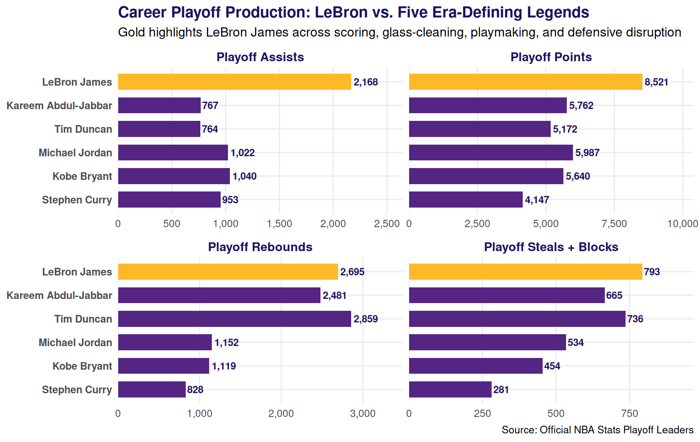

Playoffs & Clutch
When the Lights Are Brightest: All 3,016 Players in NBA Postseason History
Regular-season totals tell only half of an NBA career. Championship legacies are forged in the NBA Playoffs, where rotations shrink, defenses game-plan for every tendency, and weak links get exposed. Across all 3,016 players in NBA Playoff history, LeBron James hasn’t merely participated in deep runs — he owns the postseason record book by an almost unthinkable margin.
<div class="kpi-value">8,521</div>
<div class="kpi-label">Playoff Points (#1 All-Time by +2,534 over Jordan)</div><div class="kpi-value">#2</div>
<div class="kpi-label">All-Time Playoff Assists (2,168 — Behind Only Magic)</div><div class="kpi-value">#1</div>
<div class="kpi-label">All-Time Playoff Steals (506 — #1 in History)</div><div class="kpi-value">4× Finals MVP</div>
<div class="kpi-label">Only Player to Win Finals MVP with 3 Franchises</div>1. The Postseason Chasm: All 3,016 Playoff Careers
LeBron leads #2 Michael Jordan (5,987 points) by 2,534 playoff points — a gap larger than the entire career playoff scoring total of most Hall of Famers. Below is every player in NBA Playoff history, plotting Playoff Points against Playoff Assists, with marker size scaled by Playoff Rebounds.
2. Postseason Mount Rushmore: Head-to-Head Across 4 Dimensions
How does LeBron stack up in the playoffs against the five names most frequently mentioned alongside him — Michael Jordan, Kareem Abdul-Jabbar, Kobe Bryant, Tim Duncan, and Stephen Curry? Notice that LeBron is the only legend near or at the top of every single panel, including defensive playmaking (Steals + Blocks).
